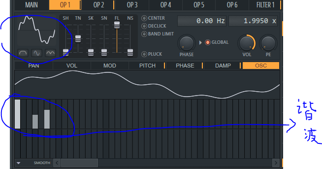
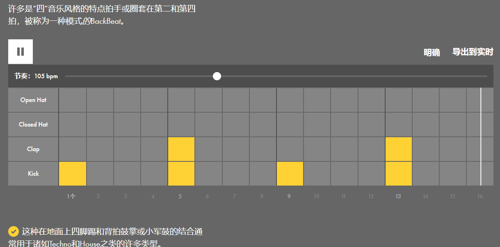
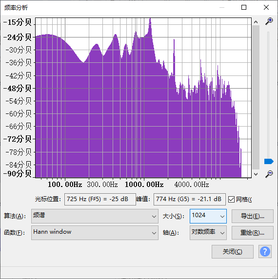
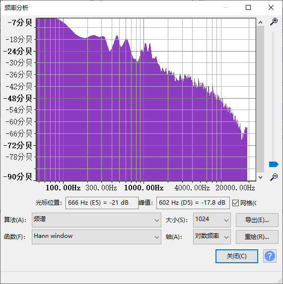

注：站长只是个纯音乐爱好者+电子乐爱好者，所以可能并不专业。建立这个网站是想让各种非专业的想自制音乐的音乐爱好者，学到一些实用的东西。侧重点一般在游戏音乐和电子音乐领域
音色是由发声体振动时泛音的多少及出现的次序等多种因素所决定的。
关于发声体的振动过程，这就完全进入了物理学的范畴，下面介绍一下谐波产生的过程。 设想波动一根琴弦，然后产生声波。由于琴弦的两端是固定的，所以琴弦的两端总是 波谷，而且波在传播的过程中遇到端点便开始反向传播，然后影响了本来的波形。由于已经存在了两个波谷，那么客观在波震动中总会产生一个 波峰。那么两个波谷加上一个波峰，就决定了基音的频率。 由于波的反向传播，要想波形达到标准稳定的状态，那么势必会将弦分成弦长相等若干等分。于是就产生了如下图所示的谐波。
根据弦长，各级泛音的音高总是基音的整数倍，所以我们很容易的可以得出下列的结论。也就是说，自然振动产生的声音，所产生的谐波总是固定的。而谐波产生的声音就是泛音。

站长自己通俗菜鸟式的理解：设你有一个合成器，里面只有一个正弦波，你在下列图片中对波形的调整，就是对谐波的调整
从图中可以，看见你对某个竖条进行调整时，波形图也会随之变化，但总的音调的振动频率不变，这个时候音色就被改变了
一般，很多音乐的旋律都有这种编排方式，一问一答，首先是一段旋律出来（问句），然后后面这段旋律对问句进行解释（答句）
而答句一般倾向于，终止式（我也不是很厉害，但是大概知道点皮毛），比如1开头1结尾，C5调开始开头,然后最终的结尾落在C5，用于表示语句的结束，相当于句号的作用
开头
个人理解：一般是出现在主要骨干旋律之后的，不是那么重要的一段旋律，和答句有区别也有相似的地方
Drum and Bass (鼓Loop)
Future House
你可以在这个网站学习如何编写基础的鼓节奏(交互式)//它这个网站很适合学习，
Future bass 鼓Loop
Rock摇滚
以下波形统一按c4音调播放
正弦波
锯齿波 方波 三角波小提琴
小提琴拨弦音
小号
长号
二胡
这个要靠自己多听，多练，多模仿，多学习，还得要有点灵感，还有就是情感的表达，艺术创作需要在一种心流状态下进行， 不然就是强制做出来的，不一定好听。 当然这只是我个人的观点。
noesis游戏中的片段示范
片段赏析：此曲中特有一种拖长音的类似鼓一样的音色，但和一般的打击乐中的音色不同，响度较轻，拖尾较长， 可用于需要表现某种深刻情感的曲子
noesis主要的那个音色在下面，我截取出来了，就是那个音色，不是背景的旋律声音
全曲链接在明日方舟的游戏bgm中，也有类似的音色
全曲欣赏明日方舟的拖长类似鼓的音色↓：
赏析：听上去就像clap音色（拍手）加上了一个大的混响效果(Rebove)
而明日方舟的这个音色，听上去比noesis里的音色响度要大，力量要大
我猜因为这两个游戏的类型不同，所以在音色的设计和选择上有所不同
noesie是一个悬疑类型的视觉小说 代表颜色:红色和黑色
明日方舟是科幻模式风格的塔防游戏 代表颜色灰色和红色
下面是频谱图对比
 这个是noesis的音色频谱 这个是明日方舟的音色频谱一般最简单的方式就是给主旋律乐器加上delay延迟效果
noesis中的例子 这种是重旋律的方式
还有一种是不加效果器，但是使用一种近似方波的音色
下面的例子是我自己做的曲子 这种是重音色，轻旋律的方式
我这里的音色是自制的，基于方波和FM技术调制，并且加上了混响效果器（音色文件没备份找不到了）
全曲欣赏还有一部分是高潮部分的编排
这里使用的是一个方波乐器做主旋律，另外一个方波乐器做节奏型伴奏，衬托主旋律，使用第二个电子乐器做LFO音量变换伴奏
总结：使用了一个主乐器，两个伴奏乐器，一个类似bass音色的伴奏乐器，可能听不太到，因为低音乐器可以起到丰富频谱的作用，用心听，还是可以听到的
bass我没有简单的做成反拍bass，加了一点点旋律变化，即bassLine，但bass旋律变化不能过大，因为是用来丰富和衬托的乐器，变化太大会导致乐曲杂乱无章
至于工程文件，被我删除了，所以你们只能通过听和分析来学习，不能找到源文件了
做这首曲子的时候，我心里时非常难受的，所以是这样子的，空灵+无助+旋律往下走的样子
还是noesis的例子
赏析：此曲使用的主旋律乐器是小提琴，弦乐类乐器，可用于抒情，一般弦乐演奏长音时，可以加入颤音效果， (zun)的小号一般也有颤音效果
这首曲子，并不是很慢的曲子，在游戏中，是出现在外出的时候，一般是在街道的背景音乐
下面这一首的名字是Slow time 就是缓慢的时间的意思，所以听上去会更加舒缓一点
赏析：这首曲子用了短促的旋律类音色->类似软化的钢琴音色，又类似软化吉他的声音，使得音乐不会过于刺耳
还使用了pad类型音色，但不是电子类的pad音色，背景有个轻声的弦乐伴奏，但不是主旋律，所以在混音上面应该是 把它的音量降下去了，还是用了一个crash音色->架子鼓的最边上那个声音很响的东西
下面是千恋万花的例子->名称：今夕の街 风格：有一种江南古代小镇的味道
赏析：主要乐器：笛子类乐器（主旋律），三味线？，弦乐，富有节奏的小提琴拨弦？
一般也是用于在外出场景的日常背景的场景bgm
开头，曲子使用的是4/4拍，但骨干节奏是即： 动擦 动擦 动擦 动擦 的走向（虽然不是用的鼓声，而是用另外一种乐器充当骨干节奏来使用）
下面是东方原曲音乐的个人解析
具体如何做这种风格的曲子，在b站上可以找到很多的教程视频
总之，一个非常重要的旋律 623532 623532 7175一定得记得穿插在曲子里
怎么说呢，这也算东方曲子特有的 核心旋律吧 因为一直以来，zun在每一个游戏作品的曲子里几乎都会用到这段旋律，虽然没一作的风格有所不同，但核心旋律不变
其他重要的东西：小号，发狂钢琴，敲塑料水桶的有点爆炸的音色，"煤气灶"音色,还有良好的乐感
下面是同人东方曲的分析
第一首:威风凛然
赏析：使用了弦乐，小提琴，类似长笛的音色(反正是正弦波类型演变的音色)，类似琵琶的琶音演奏技法（音色是不是琵琶不知道，感觉上类似）
过门效果：即下降fx音效（如果用电子乐的逻辑理解），就是Drop前面那一小段下降的Fx音效，可以和文学中的欲扬先抑进行类比学习，是差不多的
还有一种音色在上述技巧中提到：“的一种拖长音的类似鼓一样的音色，但和一般的打击乐中的音色不同，响度较轻，拖尾较长， 可用于需要表现某种深刻情感的曲子”这首曲子比较复杂，暂时还没有分析完
具体还可以细分，把单独的音色拆出来理解
以上，全是使用理性思维的拆分方式，来学习别人的作曲中的实用技巧，因为怎么做旋律是个玄学，而技巧是可以模仿的
像素类2d复古游戏音乐例子
洞窟物语主题曲
这里就不多做分析了，通过上面的几个例子，你们可以学着自己分析 授人以鱼不如授人以渔 可以自己拿一本专用笔记本来分析
Mimiga Town场景音乐->在花园
洞窟物语中的战斗场景->欢快曲目
最后一件重要的事情，我不可能面面俱到，解析所有的曲子，所以只能取其中一些代表例子来分析。
如果自己有那颗喜欢音乐的心，真正的学习在于自己，这一点和应试教育有点不一样，不是有一句话说，大佬都是自学成才的吗
我就是自学的html,css,js,jquery。游戏制作，电音（虽然很菜。不然我连这个网页都做不出来。
但我有这个兴趣爱好，就自己学呗
你可以在github上看见更多关于我的东西 小沙盒工作室项目展示页面 小沙盒工作室介绍页面